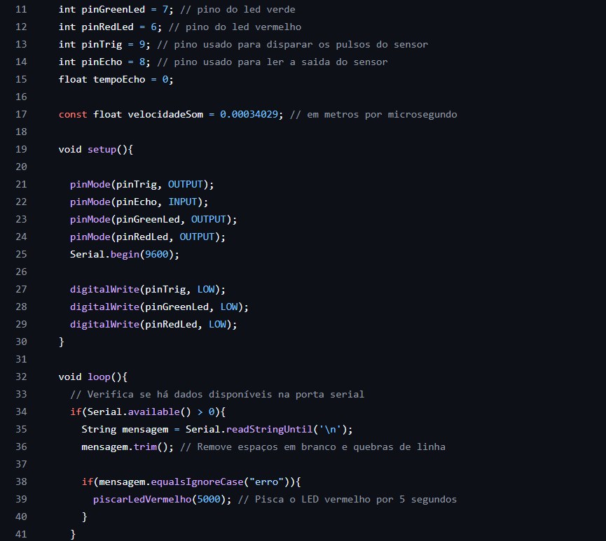

Listagem detalhada de todos os materiais utilizados no projeto.
| Componente | Descrição Detalhada | Quantidade |
|---|---|---|
| Arduino Uno R3 | Microcontrolado principal com cabo USB | 1 |
| Sensor Ultrassônico | HC-SR04 para medição de distância | 1 |
| Resistores | Conjunto de resistores de 1000Ω (marrom-preto-vermelho) | 2 |
| Protoboard | 1 | |
| jumpers | 6 | |
| Computador | Exibição das propagandas | 1 |
| LEDS | Emissão de luz para melhor sinalização(1 verde, 1 vermelho) | 2 |
| Papelão | Ultilizado para estrutura física | n/a |
| Cola | Ultilizado para fixação dos elementos | n/a |
| Papel ofício | Revestimento da estrutura física | n/a |
Ferramentas utilizadas no desenvolvimento.
Conectar o GND da Protoboard:
Insira um jumper conectando o pino GND do Arduino a uma trilha lateral (barra negativa) da protoboard (normalmente marcada com linha azul ou sinal "-").
Conectar o 5V da Protoboard:
Insira um jumper conectando o pino 5V do Arduino à outra trilha lateral (barra positiva) da protoboard (normalmente marcada com linha vermelha ou sinal "+").
Posicionar o sensor:
Coloque o sensor HC-SR04 na área central da protoboard, atravessando o canal central, com os 4 pinos em direções opostas.
Fazer as conexões:
Pino VCC do sensor → Trilha positiva da protoboard (conectada ao 5V do Arduino)
Pino GND do sensor → Trilha negativa da protoboard (conectada ao GND do Arduino)
Pino TRIG do sensor → Pino 9 do Arduino (use jumper)
Pino ECHO do sensor → Pino 8 do Arduino (use jumper)
Para o LED Verde
Posicionar o LED:
Insira o LED verde na protoboard, com o cátodo (perna curta) na linha 7, coluna e o ânodo (perna longa) ficará na linha 7, coluna f.
Adicionar o resistor (na linha do ânodo):
O resistor deve estar ligado na mesma linha do ânodo do LED (linha 7), garantindo ligação em série no lado positivo.
Conecte o resistor de 1000Ω (1kΩ) assim:
Uma perna na linha 7, coluna f (mesma coluna do ânodo).
A outra perna na linha 7, coluna a (para receber o jumper do pino do Arduino).
Dessa forma, o resistor fica em série exatamente no caminho do ânodo.
Conectar ao Arduino e GND:
Insira um jumper conectando o pino 5V do Arduino à outra trilha lateral (barra positiva) da protoboard (normalmente marcada com linha vermelha ou sinal "+").
Para o LED Vermelho
Repetir o processo em outra linha (com resistor na linha do ânodo)
Use a linha 8 da protoboard para o LED vermelho.
Posicione o ânodo na coluna f e conecte o resistor na mesma linha do ânodo (linha 8), entre a coluna f (ânodo) e a coluna a (jumper vindo do pino 6 do Arduino).
| Componente | Pino no Arduino | Pino no Componente |
|---|---|---|
| Sensor | Pino 9 | TRIG |
| Sensor | Pino 8 | ECHO |
| Sensor | 5V | VCC |
| Sensor | GND | GND |
| LED Verde | Pino 7 | Ânodo (via resistor) |
| LED Vermelho | Pino 6 | Ânodo (via resistor) |
| Ambos LEDs | GND | Cátodo |
Abaixo estão os trechos essenciais (snippets) da lógica principal.

Para acessar o código completo e atualizado, visite nosso repositório: